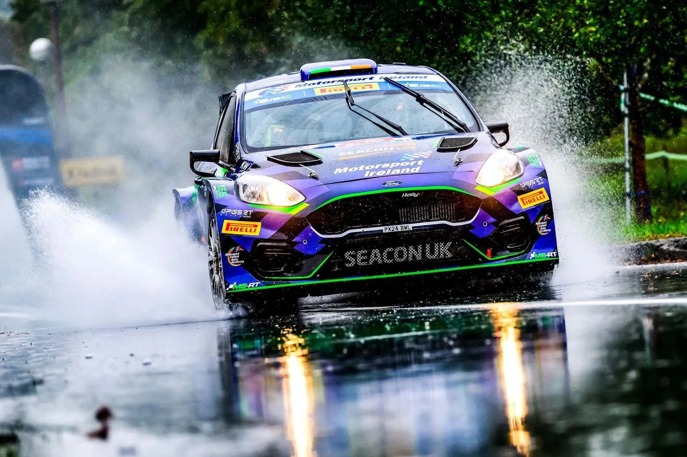
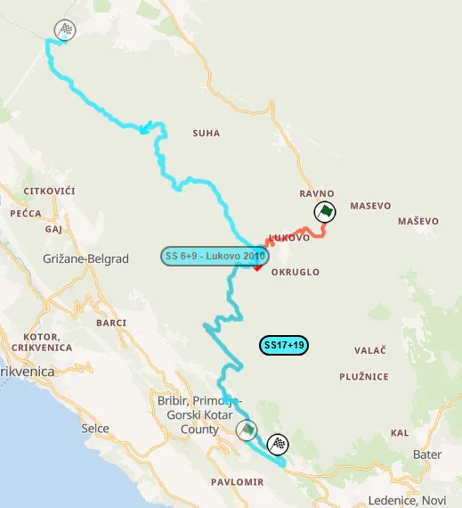

Croatia Rally 2026: Route Preview
Τhumbnail: @ World
Stage Maps: Rally-Maps.com
The Croatia Rally returns to the WRC calendar, and sees its route change. The event is now based in the Grobnik Circuit close to Rijeka, not Zagreb, which means fan favourite stages like Zagorska Sela will not feature in this year's itinerary. Instead, Friday takes place entirely in Istria, using stages last used before the event's inclusion in the WRC. There are no shared stages between the 2025 ERC edition and this year's event.
Thursday
Thursday only features the pre-event Shakedown in terms of competitive action, taking place near the rally's Service Park.
Shakedown: Grobnik - 3.44km
Changes compared to past editions: Brand new Shakedown, never used before in any rally event.
Stage description: The rally's brand new Shakedown is a stage of two halves, with the beginning being high-speed and flowing, going downhill, on a patchy tarmac surface. After a tight hairpin, the stage becomes more technical, with more tight corners all the way to the finish.
Friday
Friday features two loops of four stages located in the Istria peninsula. All of the day's stages are new when it comes to the WRC, but all have been used in the event previously, and also on local events in Croatia.
SS1/5 Vodice - Brest - 14.12km
Changes compared to past editions: New stage, last used in 2013. It is run in a similar configuration to the 2011 event. The first half of the stage was used in the 2022 Opatija Rally as SS Dane.
Stage description: The beginning of the test is on a wide and worn road, which is fast and quite flowing, heading downhill. At 4km, the stage becomes uphill and more twisty inside the forest. In that section, the road is patchy and worn, before joining a very broken road, before the village of Brest. There, it gets faster, this time heading downhill.
Following a pass through the village, the road remains worn, but not broken, becoming wider as it heads down to the finish. Interestingly, for the liaison to the next stage, the crews will pass through Slovenia briefly!
SS2/6 Lake Butoniga - Motovun - 13.78km
Changes compared to past editions: Another new stage. It was used from 2013 to 2017 in the Croatia Rally, most of the time in the opposite direction. It's only been used in this direction once before, in 2014, as SS Murari.
Stage description: Friday's second stage starts to Lake Butoniga, in a flowing road, which climbs uphill. There are many surface changes between very worn tarmac and freshly paved one, up until around the 2.6km mark.
A fast and flowing section follows, going in and out of the forest, leading to the village of Kascerga. After that, there is a passage through a narrow and worn road, with the stage joining a wider one via a jump at 5.45km. From then on until the 9km mark, the road is worn but very high-speed, mostly in an open area.
The end of the stage is downhill, again featuring many surface changes, while also being more technical, remaining fast.
SS3/7 Beram - Cerovlje - 23.78km
Changes compared to past editions: Another new inclusion to the itinerary. It is identical to the 2017 version of SS Cerovlje which was included in the Croatia Rally's itinerary.
Stage description: The start of the stage is on a worn road, with many elevation changes. There's a passage through a village at 2km, after which the test continues constantly changing between uphill and downhill, featuring a big crest at 3.1km.
Following another village passage, the road widens, and becomes more high-speed. After a hairpin at 6.65km, there's a very high-speed downhill section that will be very tricky come rally time. The flowing and high-speed nature of the test is interrupted shortly after, with a series of downhill hairpins, before the stage picks up the pace again.
At 11km there's a more technical uphill stretch, before a fast and flowing section on a freshly paved surface next to vineyards, featuring a big crest at 16.5km, after which there's a high-speed downhill stretch.
There's many elevation changes throughout the last section of the stage, with a sideways crest at 18.9km, and multiple high-speed sections, as well as another crest before the finish at 22km.
SS4/8 Učka - 11.75km
Changes compared to past editions: Used for the first time in the WRC. Učka was part of the Croatia Rally from 2010 to 2014 back when the event was based in Rijeka and Porec.
Stage description: Friday's closing stage is very different compared to the other stages of the day. It is entirely on a wide two lane road inside a forest, first climbing uphill, and then going downhill.
The start is very twisty, with many hairpins and tight corners, including a nice sequence of two tight downhill bends at 2km. Following a high-speed section, there's a pass through a village, with the stage then re-entering the forest, becoming faster and more flowing. It then starts heading downhill. From the village until about the 5.35km mark, one lane of the road is gravel as of writing this. It could be fixed by the time the rally proper is on.
At 7km the stage becomes twisty again, with consecutive slow and medium speed corners for roughly a kilometer or so, after which it becomes fast again until the finish.
It is for sure not like a typical Croatia Rally stage, it's more akin to something from Sanremo!
Saturday
Saturday brings the rally to familiar territory, using stages in the Karlovac region. In fact, three of the day's stages are identical to the 2024 edition. The crews will head from Grobnik to Karlovac, where there will be a remote service, and then tackle the same stages in reverse order.
SS9/16 Platak - 16.70km
Changes compared to past editions: Identical to the 2024 Platak stage.
Stage description: Saturday's opener is a stage of two halves. The start of the stage is on an uphill and narrow road inside a forest, which is initially fairly quick. It then gets twisty and slow, before a short flat-out section, after which it again becomes twisty.
Onboard of the 2023 Platak test. The start was later in the stage, and also had a weird mickey mouse section in the Platak Skiing Resort.
The stage climbs to a 1200m altitude. At 9km it turns onto a wide and smooth two lane road, and starts descending the mountain. The remainder of the stage is on this road, and is very fast, with many long, sweeping corners and hairpins. The last 1.2km are also on a more worn surface.
Platak is known for having unpredictable weather conditions depending on what part of the stage the cars are on. In 2024 we saw sleet on the descent, with snow on the side of the road in the higher altitudes, and in 2022 the second pass was cancelled due to thick fog.
Video from the high-speed descent of the stage
SS10/15 Ravna Gora - Skrad - 10.13km
Changes compared to past editions: Identical to the 2024 Ravna Gora - Skrad stage. Thierry Neuville crashed from the lead here in 2023.
Stage description: The start is on a medium-wide and worn road, which features high-speed sections, on a mostly open area. It then gets narrower as it enters the forest, including a high-speed passage through a village. At 3.1km the stage becomes more technical and slow, with a tricky section.
After that the stage leaves the forest, and becomes more-high speed again, with the road surface becoming more broken. There's a tight hairpin at 6.75km, after which there's a crest.
Following another passage through a village, the road surface becomes very worn and broken, on another technical section. The end section is on a newly paved surface, which is smooth, with the stage having a lot more flowing characteristics towards the finish.
Onboard from the 2023 edition
SS11/14 Generalski Stol - Zdihovo - 22.48km
Changes compared to past editions: Brand new stage never used before in the event. It was previously used by teams as pre-event testing before the rally itself.
Stage description: Saturday's only new stage starts off on a medium wide and broken road, which is generally fast and features many elevation changes. There's a tricky, technical, downhill section at 8km, with the route passing next to a river. It then continues onto a wide two-lane road, that features two passages over bridges.
Following that, the road becomes narrower, climbing uphill, becoming even narrower as it enters the forest at 12.6km. The surface becomes very worn and broken, with the stage featuring many tricky sections, with a lot of pollution on the road. At 20.87km there is a pass over a dried up river, in a section that can get very muddy.
The finish of the test is after a high-speed section where the stage passes under a highway.
SS12/13 Pećurkovo Brdo - Mrežnički Novaki - 9.11km
Changes compared to past editions: Identical to the 2024 Pećurkovo Brdo stage, again used on Saturday. It's the only stage to be used in every edition of the Croatia Rally, and remains unchanged since the 2021 edition.
Stage description: The stage starts off on a flowing high-speed road with crests. The road gets wider after a junction at 1.2km, and becomes flat-out, with more crests. There's a series of crests as the road enters the forest at 3.9km, including a sideways jump. Following that, the stage becomes slower with a sequence of twisty downhill corners, but it again becomes fast as it leaves the forest. There's a big jump at 5.91km.
The stage goes in and out of the forest constantly after that, changing between some slower and technical sections and high-speed ones with crests until the finish.
There are a lot of cutting opportunities, especially outside the forest, with punctures being common as a result.
Onboard from the 2023 edition
Sunday
The last day of the event is on uncharted territory, with two stages new stages to the south of the rally's HQ, in the upper Adriatic coast.
SS17/19 Bribir - Novi Vinodolski - 14.17km
Changes compared to past editions: Brand new stage. Sections of this test were used in reverse as part of the 2010 Lukovo stage.

This year's Bribir - Novi Vinodolski stage compared to 2010 SS Lukovo
Stage description: Excluding a high-speed passage through the village of Lukovo, the first part of the stage is almost entirely inside the forest, with the road being twisty and technical. The surface progressively gets more and more worn, as it starts heading downhill.
Following a hairpin at 8.5km, there's a very high-speed section, after which the stage continues heading downhill, remaining mostly fast until the finish.
SS18/20 Alan - Senj - 14.17km
Changes compared to past editions: Brand new stage, not used before in the rally.
Stage description: The stage kicks off on a quite worn and broken road inside a forest, heading downhill. Upon exiting the forest, it becomes more smooth and wider, in an open area. The road is quite fast and flowing, more reminiscent of Catalunya.
Following a passage next to a village, the stage continues to be fast, going downhill, being in an open area
It continues to have the same character, being fast and flowing in an open area, with the upper Adriatic Coast as a backdrop. At 9.92km the road gets more worn, with the finish being after a series of downhill hairpins.


Comments